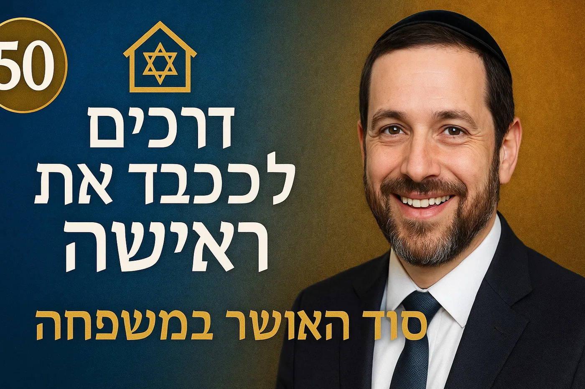

כבוד, כובד וכוונה: ניתוח תכלית מצוות הכבוד במסורת היהודית – בין תיקון הנותן לצורכי המקבל
מבוא: שאלת הכבוד – בין הפסיכולוגי לתיקון המידות
מערכת המצוות היהודית, במגוון ציווייה, מציבה את מושג הכבוד כערך יסוד. אולם, מאחורי הציוויים המוכרים – "כבד את אביך ואת אמך", "והדרת פני זקן", "והמכבדה יותר מגופו" – מסתתרת שאלה תאולוגית ואתית עמוקה: מהי תכליתו המרכזית של הכבוד? האם מדובר במצווה שנועדה בראש ובראשונה למלא צורך נפשי, רגשי או חברתי של המקבל – להעניק לו תחושת ערך, שייכות והכרה? או שמא, עיקר מטרתה הוא לחולל תהליך חינוכי ורוחני בנפשו של הנותן – לעדן את מידותיו, ללמדו הכרת הטוב, לפתח בו אמפתיה ולהנחיל לו תפיסת עולם ערכית?דיכוטומיה זו אינה טכנית גרידא; היא נוגעת בליבת ההבנה של האתיקה היהודית – האם היא מכוונת לתוצאה החברתית ולרווחת הפרט המקבל, או שמא היא מתמקדת בתיקון נפשו ובעיצוב עולמו הרוחני של הפרט המקיים את המצווה. דוח מחקר זה יבקש לבחון שאלה זו לעומקה, דרך ניתוח מגוון הקשרי הכבוד במסורת היהודית, תוך היעזרות בפרספקטיבות פילוסופיות, פסיכולוגיות ותרבותיות.
ניתוח אטימולוגי של השורש כ.ב.ד
בכדי להבין את מושג הכבוד, יש להתחקות אחר שורשיו הלשוניים. במקורו, השורש כ.ב.ד במקרא מציין משקל פיזי, רצינות והיקף.1 אנו מוצאים ביטויים כמו "ערפל כבד", "רעב כבד" או "וְאַבְרָם כָּבֵד מְאֹד בַּמִּקְנֶה בַּכֶּסֶף וּבַזָּהָב" (בראשית יג, ב), שם "כבד" פירושו בעל רכוש רב.2 ממשמעות פיזית זו, התפתחה משמעות מושאלת של "משקל" חברתי, השפעה ומעמד. כפי שמצוין בספרות חז"ל, "כבוד האדם הוא המשקל שיש לייחס לו, לדעותיו, לרצונו, לאישיותו".3 מכאן, שפגיעה בכבודו של אדם היא למעשה "הקלה במשקלו ובערכו".3 הפועל "לכבד" קיבל משמעויות מעשיות הנגזרות מהכרה זו במשקל: להעניק יחס של חשיבות, להגיש מאכל ומשקה לאורח, או להזמין לפעולה שיש בה הוקרה, כמו עלייה לתורה.4
המסגרת האנליטית: Dignity מול Honor
הדיון המודרני בפסיכולוגיה ובסוציולוגיה מבחין בין שני מושגי יסוד: "Dignity" (כבוד אינהרנטי) ו-"Honor" (כבוד נרכש). "Dignity" מתאר ערך פנימי, מולד ובלתי ניתן לערעור, השייך לכל אדם באשר הוא אדם.5 לעומתו, "Honor" הוא מושג חברתי; זהו כבוד נרכש, תלוי-הקשר, המבוסס על מוניטין, מעמד ותפקיד, והוא יכול להינתן, להילקח או להיפגע.7המסורת היהודית, כפי שנראה, מכילה באופן מורכב את שני הממדים. מצד אחד, רעיון "כבוד הבריות", הנגזר מהיות האדם ברוא ב"צלם אלוהים", מקביל במידה רבה למושג ה-Dignity האוניברסלי.2 מצד שני, מערכת מצוות הכבוד הספציפיות (להורים, לחכמים, למלכים) מתפקדת כמערכת של Honor, המעצבת היררכיה חברתית-ערכית ומגדירה את היחסים בתוך הקהילה. שאלת המחקר שלנו תבחן, בין היתר, את הדינמיקה שבין שני מושגים אלו כפי שהיא באה לידי ביטוי במקורות.
חלק א': כבוד האדם – היסודות
פרק 1: "כבד את אביך ואת אמך" – אבן הראשה של הכבוד הבין-אישי
מצוות כיבוד אב ואם, המופיעה בעשרת הדיברות, מהווה את אב-הטיפוס של חובת הכבוד הבין-אישית ביהדות. ניתוח טעמיה וגבולותיה חושף את המורכבות המלאה של שאלת המחקר.
1.1 טעמי המצווה: מבט רב-שכבתי
פרשני המקרא וההלכה העניקו למצווה זו מספר טעמים, אשר כל אחד מהם מאיר זווית אחרת בתכליתה.
- הכרת הטוב (התמקדות בנותן): הטעם הבסיסי והאינטואיטיבי ביותר מנוסח על ידי "ספר החינוך": "משורשי מצוה זו שראוי לו לאדם שיכיר ויגמול חסד למי שעשה עמו טובה, ולא יהיה נבל ומתנכר וכפוי טובה, שזו מידה רעה ומאוסה בתכלית לפני אלקים ואנשים".9 על פי טעם זה, המצווה היא בראש ובראשונה תרגיל חינוכי בתיקון מידותיו של הנותן (הבן), המחנך אותו להכיר טובה ולהימנע מכפיות טובה.
- שותפות עם האל (התמקדות בנותן): חז"ל קבעו כי "שלושה שותפין הם באדם, הקב"ה ואביו ואמו" (תלמוד בבלי, מסכת קידושין, דף ל, עמוד ב).11 כבוד ההורים הוקש לכבוד המקום, והתורה השוותה את מוראם למורא שמיים.11 טעם זה מעתיק את המצווה מהמישור המוסרי-אנושי אל המישור התיאולוגי. הכבוד להורים הופך לאקט של יראת שמיים, שבו הנותן מכבד את האל דרך נציגיו בעולם. "ספר החינוך" מרחיב וקושר בין הטעמים, וטוען שההכרה בטובת ההורים היא שלב הכרחי בדרך להכרה בטובת האל, "שהוא סיבתו וסיבת כל אבותיו עד אדם הראשון".9
- שמירת המסורת (התמקדות בנותן ובחברה): רבי שמשון רפאל הירש מציע טעם היסטורי-לאומי. לדידו, כיבוד הורים הוא "התנאי לנצחיותה של האומה הישראלית".13 האמונה היהודית, המושתתת על אירועים היסטוריים מכוננים כיציאת מצרים ומתן תורה, תלויה כולה בהעברה נאמנה של המסורת מאב לבן. הכבוד והאמון שהבן רוחש להוריו הם הערובה היחידה להמשכיותה של שרשרת המסירה. כאן, התועלת היא כפולה: לנותן, המתחבר לשורשיו ולזהותו, ולחברה כולה, השומרת על קיומה הנצחי.
- הכרה בסדר הקוסמי (התמקדות בנותן): המהר"ל מפראג מעמיק את המבט ורואה בכיבוד הורים הכרה בכך שהאדם הוא חלק מ"נצח א-לוקי בעולם".14 הבן הוא "בניין האבא" והמשכיותו. לפיכך, הכבוד אינו רק תודה אישית על החיים, אלא "הכרזה ועדות שעצם המציאות הוא טוב".13 זהו אקט של התיישרות עם הסדר האלוהי של המציאות.
1.2 בין הנותן למקבל: ניתוח הטעמים
בחינה כוללת של טעמים פילוסופיים אלו חושפת דפוס ברור: הדגש המרכזי מושם על התהליך הפנימי שעובר הנותן. בין אם מדובר בתיקון מידות (הכרת הטוב), בחינוך תיאולוגי (שותפות עם האל), בביסוס הזהות הלאומית (שמירת המסורת) או בהתיישרות קוסמית (הכרת טוב המציאות), התועלת מכוונת לעיצוב תודעתו, אישיותו ועולמו הרוחני של הבן המכבד.אולם, לצד טעמים נעלים אלו, ההלכה מגדירה את הכבוד במונחים מעשיים וארציים להפליא: "איזהו כיבוד? מאכיל ומשקה, מלביש ומכסה, מכניס ומוציא".9 הגדרות אלו מכוונות באופן מובהק למילוי צרכיו הפיזיים והקיומיים של המקבל (ההורה), במיוחד כאשר הוא מגיע לזקנה וזקוק לסיוע.12 המתח בין שני המישורים בא לידי ביטוי במחלוקת התלמודית בשאלה האם הכיבוד הכלכלי צריך להיות "משל אב" או "משל בן".12 מחלוקת זו משקפת את השניות המובנית במצווה: האם היא חובה המוטלת על הבן (הנותן) להוציא מממונו, או זכות של האב (המקבל) לקבל טיפול מנכסיו שלו.
1.3 התנגשות ערכים וגבולות הכבוד
העובדה שמצוות כיבוד הורים אינה אבסולוטית, ונדחית מפני ערכים אחרים, שופכת אור נוסף על מהותה.
- כבוד הורים מול כבוד המקום: הגמרא קובעת באופן חד-משמעי כי אם הורה מצווה על בנו לעבור על מצווה, בין אם מצוות עשה או לא תעשה, אסור לבן לשמוע לו, והנימוק הוא: "אני ה'... כולכם חייבין בכבודי" (תלמוד בבלי, מסכת יבמות, דף ו, עמוד א).15 הרב מיכאל אברהם מנתח זאת וקובע כי אין מדובר בהיררכיה כמותית (שכבוד האל "גדול יותר"), אלא ביחס מהותי: מכיוון שכבוד ההורים יונק את סמכותו מכבוד המקום, הוא מתבטל מעיקרו כאשר הוא בא בסתירה למקור שממנו הוא נובע.15
- כבוד הורים מול בניית התא המשפחתי: התורה קובעת: "עַל כֵּן יַעֲזֹב אִישׁ אֶת אָבִיו וְאֶת אִמּוֹ וְדָבַק בְּאִשְׁתּוֹ וְהָיוּ לְבָשָׂר אֶחָד" (בראשית ב, כד).16 נייר עמדה של ארגון 'צהר' מבהיר כי פסוק זה קובע עדיפות מהותית לקשר הזוגי על פני הקשר להורים.16 המחויבות הראשונית של אדם נשוי היא לבן/בת זוגו, ושלום הבית הוא ערך עליון הגובר על חובת הכיבוד במקרים של התנגשות, כגון התנגדות של בן הזוג לאירוח ההורה בביתם.16
- היבטים מגדריים וביקורת פמיניסטית: ההלכה קובעת כי "אחד האיש ואחד האשה שוין בכבוד ובמורא של אב ואם", אך מיד מסייגת ופוטרת אישה נשואה מהמצווה, מהטעם ש"רשות אחרים [בעלה] עליה".12 פטור זה, אף אם נבע ממציאות סוציו-כלכלית היסטורית, מהווה נקודת מוצא לביקורת פמיניסטית. הוא משקף תפיסה היררכית הממקמת את האישה תחת "רשותו" של בעלה, ומעדיפה את מחויבותה כלפיו על פני מחויבותה להוריה. הוגות דתיות-פמיניסטיות, דוגמת פרופ' תמר רוס, מציעות קריאות חדשות למסורת, המבקשות ליישב בין מחויבות הלכתית לתובנות מודרניות של שוויון.19 פרשנויות עדכניות יותר טוענות כי במציאות ימינו, שבה המבנה המשפחתי השתנה, חובתה של אישה נשואה כלפי הוריה שבה להיות זהה לזו של איש.16
מצוות כיבוד הורים מתגלה, אם כן, כ"מעבדה" מרוכזת של מושג הכבוד היהודי. היא מכילה את המתחים כולם: בין צורכי המקבל (תמיכה פיזית) לחינוך הנותן (הכרת הטוב); בין חובה אישית (כלפי ההורה) לחובה תיאולוגית (כלפי האל); ובין חובה אוניברסלית (גמול טובה) לחובה קונטקסטואלית (העברת המסורת היהודית). הגבולות וההתנגשויות אינם מחלישים את המצווה, אלא מגדירים את מהותה: אין זו דרישה לציות עיוור, אלא הזמנה לתהליך חינוכי מורכב, שבו הנותן לומד לאזן בין מחויבויות שונות ולהבין את מקומו במארג המשפחתי, הלאומי והדתי.
פרק 2: "והדרת פני זקן" – כבוד לחכמה ולניסיון החיים
הציווי לכבד את הזקן מרחיב את מעגל הכבוד מעבר לתא המשפחתי הגרעיני, ומציב במרכזו ערכים של חכמה וניסיון חיים.
2.1 "זקן" – מי הוא? המתח בין גיל לחכמה
הציווי המקראי "מִפְּנֵי שֵׂיבָה תָּקוּם וְהָדַרְתָּ פְּנֵי זָקֵן" (ויקרא יט, לב) 21 מעורר שאלה פרשנית: האם "שיבה" ו"זקן" הם מושגים נרדפים, או שמא מדובר בשתי קטגוריות שונות? חז"ל דנו בשאלה זו בהרחבה. הגמרא במסכת קידושין (דף לב, עמוד ב) מציגה דעות שונות, אך ההלכה נפסקה כדעת איסי בן יהודה, שיש לכבד הן את מי שהגיע לגיל "שיבה" (גיל 70, או 60 לפי האר"י 22), והן את ה"זקן" במובן של "זֶה שֶׁקָּנָה חָכְמָה".21 בכך, יוצרת ההלכה הבחנה ברורה בין כבוד הניתן מכוח הגיל והניסיון, לבין כבוד הניתן מכוח החכמה והידע התורני.
2.2 תכלית הכבוד לזקן ולתלמיד חכם
- כבוד ככלי לעידוד לימוד תורה (הנותן והחברה): "ספר החינוך" מסביר את טעם המצווה באופן פונקציונלי-חינוכי מובהק: "לפי שעיקר היות אדם נברא בעולם הוא מפני החכמה, כדי שיכיר בוראו, על כן ראוי לבני אדם לכבד מי שהשיג אותה, ומתוך כך יתעוררו האחרים עליה".24 לפי גישה זו, הכבוד אינו מטרה בפני עצמה, אלא אמצעי פדגוגי. הוא נועד ליצור מוטיבציה חברתית ללימוד תורה ולהשגת חכמה, ובכך הוא משרת את הנותן (שמתעורר לשאוף לחכמה) ואת החברה כולה (שמעלה על נס את ערך לימוד התורה).
- כבוד כביטוי לערך התורה (הנותן): הרמב"ם, בהלכות תלמוד תורה (פרק ו'), מפרט שורה ארוכה של דיני כבוד לתלמידי חכמים.25 מתוך מכלול ההלכות עולה בבירור כי הכבוד אינו מיועד להאדרת אישיותו של החכם, אלא להאדרת התורה שהוא נושא ומהווה את התגלמותה החיה. העונש החמור המוטל על המבזה תלמידי חכמים נובע מכך שביזוים נחשב לביזוי "דבר ה' ".26 כלומר, פעולת הכבוד היא תרגול עבור הנותן בהכרה בערכה העליון של התורה.
- כבוד לניסיון חיים (הנותן והמקבל): הטעם לכבד גם "זקן אשמאי" (אדם מבוגר שאינו תלמיד חכם) הוא "מפני שברב שניו ראה והבין קצת במעשי השם ונפלאותיו".22 כאן, מושא הכבוד הוא ניסיון החיים המצטבר והתובנות הנרכשות עם הגיל. יש כאן תועלת כפולה: המקבל זוכה להכרה בערכו ובחכמת חייו, גם אם אינו למדן, והנותן לומד להעריך את ערך הזמן והניסיון.
2.3 הדגש על הנותן: פרדוקס הכבוד הנמנע
אחת ההוראות המפתיעות והחושפניות ביותר בנוגע לכבוד תלמידי חכמים היא הנחיית הרמב"ם: "אין ראוי לחכם שיטריח את העם ויכוין עצמו להן כדי שיעמדו מפניו, אלא ילך בדרך קצרה ומתכוין שלא יראו אותו כדי שלא יטריחן לעמוד".26 חז"ל מספרים על חכמים שהיו מקיפים את דרכם והולכים בדרכים צדדיות כדי להימנע מקבלת כבוד מהציבור.26פרדוקס זה חושף את ליבת תכליתו של הכבוד לחכם. אילו המטרה הייתה סיפוק צורך רגשי או חברתי של החכם, הנחיה זו הייתה בלתי הגיונית וסותרת את עצמה. עצם העובדה שהחכם מצווה לברוח מן הכבוד ("כל הבורח מן הכבוד הכבוד רודף אחריו" 28) מוכיחה שהמצווה אינה מיועדת בראש ובראשונה עבורו, אלא עבור החברה. זהו מנגנון חברתי-חינוכי שנועד להטמיע בקרב הציבור את ערכה העליון של התורה. ענוותנותו של החכם והימנעותו מרדיפת כבוד מחזקות את המסר שהכבוד ניתן לתורה שבו, ולא לאישיותו הפרטית. זהו למעשה תהליך חינוכי כפול: הציבור לומד לכבד את התורה, והחכם, מושא הכבוד, לומד ומפנים את מידת הענווה.
פרק 3: "המכבדה יותר מגופו" – כבוד האישה במרחב הזוגי
הציווי לכבד את האישה במרחב הזוגי מציג מודל ייחודי של כבוד, השונה מהמודלים ההיררכיים של כבוד להורים ולחכמים, ומתמקד בדינמיקה של הדדיות ושותפות.
3.1 מקורות החיוב וביטוייו המעשיים
המקור המרכזי לחובה זו נמצא בתלמוד: "האוהב את אשתו כגופו, והמכבדה יותר מגופו" (תלמוד בבלי, מסכת יבמות, דף סב, עמוד ב).29 הרמב"ם פוסק זאת להלכה ומתרגם את הציווי המופשט להנחיות מעשיות וברורות: "וכן צוו חכמים שיהא אדם מכבד את אשתו יותר מגופו... אם יש לו ממון מרבה בטובתה כפי הממון. ולא יטיל עליה אימה יתירה ויהיה דבורו עמה בנחת ולא יהיה עצב ולא רוגז".29 ההדרכה אף מגיעה לכדי כך שהבעל מצווה לקנות לאשתו בגדים ותכשיטים "יותר ממה שיש לו", כלומר מעבר ליכולתו הכלכלית.29 ביטויים אלו מכוונים באופן מובהק למילוי צרכיה החומריים והרגשיים של האישה, המקבלת.
3.2 תכלית הכבוד לאישה
- מנקודת מבט הבעל (הנותן): הטעם המרכזי המובא בגמרא לחובה זו קושר את פעולת הכבוד לתועלת ישירה עבור הנותן: "לעולם יהא אדם זהיר בכבוד אשתו, שאין ברכה מצויה בתוך ביתו של אדם אלא בשביל אשתו" (תלמוד בבלי, מסכת בבא מציעא, דף נט, עמוד א).29 כלומר, הכבוד שהבעל מעניק לאשתו אינו פעולה חד-כיוונית; הוא חוזר אליו בדמות "ברכה" בביתו. זהו תהליך של עידון המידות, הכרה בתרומתה החיונית של האישה לחיי הבית, המוביל בסופו של דבר לטובתו של הבעל עצמו.
- מנקודת מבט האישה (המקבלת): ההנחיות המעשיות – דאגה לצרכיה, דיבור בנחת, הימנעות מהטלת אימה – עונות באופן ישיר על צרכים פסיכולוגיים בסיסיים של ביטחון, ערך, שייכות ואהבה. הכבוד הניתן לה ממצב אותה כ"עקרת הבית" – לא במובן של עובדת משק בית, אלא במובן של "עיקרו של הבית" 31, זו שמעצבת את אופיו ואת האווירה השוררת בו. הכבוד מאשרר את מעמדה המרכזי והחיוני.
3.3 מתחים ופרספקטיבות ביקורתיות
חשוב להכיר בכך שבצד הצהרות נאצלות אלו על כבוד האישה, קיימות במקורות ההלכתיים גם אמירות והלכות המשקפות מעמד נחות או מוגבל יותר.30 דוגמאות לכך כוללות את דברי הרמב"ם המגבילים את יציאתה של האישה מהבית ("שאין יופי לאישה אלא לישב בזווית ביתה" 30), או דיני ירושה המפלים בין בנים לבנות.30 ניתן לנתח מתח זה לאור ההבחנה בין המרחב הפרטי, הזוגי, שבו מעמדה וכבודה מועצמים, לבין המרחב הציבורי, שבו תפקידיה וזכויותיה היו מוגבלים יותר במסורת ההלכתית.המודל של כבוד האישה הוא ייחודי בכך שהוא הכי קרוב למודל של תועלת הדדית וסימביוטית. בניגוד לכבוד להורים (הנובע מחובת הכרת הטוב) או לחכמים (הנובע מערך התורה), הכבוד לאישה נובע מהדינמיקה הפנימית של הקשר הזוגי ומההכרה בתלות ההדדית. הנותן (הבעל) מקבל "ברכה", והמקבלת (האישה) מקבלת מענה לצרכיה. במודל זה, הדיכוטומיה הנוקשה של "נותן" מול "מקבל" כמעט ומתמוססת לתוך היחידה האורגנית של "בשר אחד".
חלק ב': כבוד הקודש והרעיון האוניברסלי
פרק 4: כבוד לספר התורה וכבוד השם – מהאדם אל המופשט
המעבר מכבוד לאנשים לכבוד לחפצים קדושים ולמושגים מופשטים חושף את השלב הבא בהתפתחות הרעיון, שבו הדגש עובר באופן כמעט מוחלט אל הנותן.
4.1 כבוד ספר התורה
ההלכה דורשת לנהוג "כבוד גדול" בספר תורה. חובה זו כוללת ייחוד מקום מכובד עבורו, הימנעות ממעשי ביזיון כגון יריקה או פשיטת רגליים כנגדו, והתנהגות כללית של "כובד ראש וביראה ופחד".33 אך האם הכבוד מופנה לחפץ הפיזי – הקלף והדיו – או לרעיון שהוא מייצג?האמירה "כל המכבד את התורה גופו מכובד על הבריות" (משנה, מסכת אבות, פרק ד, משנה ו) 35 מצביעה בבירור על כך שהכבוד חוזר אל האדם המכבד, כלומר התועלת היא לנותן. באופן חד יותר, הגמרא מכנה "טפש" את מי שקם בפני ספר תורה אך אינו קם מפני לומדיה.34 אמירה זו מבהירה שהחפץ עצמו אינו העיקר; הוא רק סמל. הכבוד האמיתי מיועד לתוכן, לחכמה, לתורה החיה בקרב לומדיה.מכאן עולה כי מצוות כבוד ספר התורה היא בראש ובראשונה תרגול בהפשטה. היא מחנכת את האדם (הנותן) לכבד רעיון מופשט – דבר אלוהים – המגולם בחפץ פיזי. זהו שלב פדגוגי הכרחי במעבר מכבוד המותנה באנושיות ובאינטראקציה בין-אישית, לכבוד המופנה כלפי המוחלט והטרנסצנדנטי.
4.2 כבוד השם
פסגת מושג הכבוד היא הכבוד המופנה כלפי האל עצמו. כבוד זה בא לידי ביטוי בעיקר בדרך השלילה: באיסור למחוק את שמותיו הקדושים, בצורך לגנוז כתבי קודש שבלו 36, ובאיסור החמור של "חילול השם" – עשיית מעשה הפוגע בשמו של האל בעולם.37כאן, שאלת ה"מקבל" מתאיינת לחלוטין, שכן לאל אין צרכים פיזיים או רגשיים. הדיון עובר כולו למישור הפילוסופי. הרמב"ם, ב"מורה נבוכים", מפרש את הפסוק "כל הנקרא בשמי ולכבודי בראתיו" כביטוי לרצונו המוחלט של האל, שאינו זקוק לכבוד חיצוני ואינו מפיק ממנו תועלת.38 לעומתו, המהר"ל מפראג מציע תפיסה רדיקלית יותר: העולם עצמו, בעצם קיומו והופעתו בפועל, הוא כבוד ה'.38 לפי המהר"ל, האדם המכבד את ה' אינו "נותן" לו דבר מה חסר, אלא מכיר במציאות כפי שהיא ומתיישר עם הסדר האלוהי הטבוע בה.בנקודה זו, מושג הכבוד הופך כולו לתהליך פנימי בנפשו של ה"נותן". זוהי הכרה במקור כל המציאות, המובילה לענווה, ליראת שמיים, ולפעולה מוסרית בעולם ("קידוש השם") המשקפת את ההכרה העמוקה הזו.
חלק ג': מבט השוואתי, סיכום ומודל אינטגרטיבי
פרק 5: מבט השוואתי ופסיכולוגי
5.1 כבוד כצורך אנושי אוניברסלי
הפסיכולוגיה המודרנית מכירה בכבוד (Dignity) כצורך אנושי בסיסי ואוניברסלי.39 הצורך בכבוד מקביל לצורך בשייכות, במעמד ובהכרה. להיות מטופל בכבוד מאשר את "סטטוס החבר המוערך בקבוצה".40 פגיעה בכבוד (Indignity) נחווית כאיום קיומי, כניסיון להפוך אדם ל"לא-כלום" (Nobody), ויכולה לעורר תגובות פסיכולוגיות קשות, לרבות אלימות.40 תובנות אלו מספקות תמיכה חזקה לצד ה"מקבל" של שאלת המחקר: מתן כבוד עונה על צורך אנושי עמוק וחיוני לרווחה הנפשית והחברתית.
5.2 כבוד בדתות אחרות: מקרה מבחן – קונפוציאניזם
בחינה השוואתית מגלה הקבלות מרתקות. בתורת קונפוציוס, מצוות כיבוד ההורים (孝, xiao) היא ערך עליון. באופן מפתיע, גם שם היא בנויה משני רבדים, בדומה ליהדות.43 הרובד הראשון הוא תמיכה חומרית ודאגה פיזית (养, yang). הרובד השני, והחשוב יותר, הוא יראת כבוד, הערכה ואהבה (敬, jing). קונפוציוס עצמו שואל רטורית: "היום, כיבוד הורים פירושו רק לכלכל אותם. אך גם כלבים וסוסים זוכים לכלכלה. ללא יראת כבוד, מה מבדיל בין השניים?".43 שאלה זו מהדהדת באופן מדויק את ההבחנה היהודית בין ההיבט המעשי ("מאכיל ומשקה") לבין ההיבט הרוחני-חינוכי של הכבוד. דמיון זה מצביע על כך שהדינמיקה הכפולה של הכבוד – מענה לצורך פיזי לצד חינוך לערך רוחני – אינה ייחודית ליהדות, אלא ככל הנראה פתרון אנושי-אוניברסלי לאתגר של יחסים בין-דוריים.
5.3 תרבויות של כבוד (Honor) ותרבויות של כבוד-עצמי (Dignity)
היהדות, כתרבות קולקטיביסטית-מסורתית 44, מציגה מאפיינים ברורים של "תרבות כבוד" (Honor Culture): חשיבות עליונה למוניטין ("קידוש השם" מול "חילול השם"), מבנה חברתי היררכי, והגנה על כבוד הקבוצה.7 עם זאת, ובאופן ייחודי, היא מבססת מערכת זו על יסוד איתן של "תרבות כבוד-עצמי" (Dignity Culture). הרעיון שכל אדם נברא ב"צלם אלוהים" ומכאן נובע "כבוד הבריות" 2 הוא קביעה של ערך פנימי, מוחלט ובלתי ניתן לערעור, שאינו תלוי במעמד או בהישגים. היהדות, אם כן, משלבת באופן מורכב בין שתי התפיסות: היא דורשת כיבוד של היררכיות חברתיות (Honor), אך מעגנת את כל מערכת היחסים הזו בתפיסת יסוד של ערך אנושי אינהרנטי (Dignity).
פרק 6: סיכום ו"נוסחת על" להבנת תכלית הכבוד
6.1 סינתזה של הממצאים
הניתוח שהוצג לאורכו של הדוח מראה כי הדיאלקטיקה בין הנותן למקבל פועלת בכל אחד מהקשרי הכבוד, אך האיזון ביניהם משתנה. ככל שמושא הכבוד הופך מוחשי ואישי פחות, ומופשט וטרנסצנדנטי יותר – מהורה, לזקן, לאישה, לספר תורה, ולאל – כך הדגש עובר באופן מובהק מהמענה לצרכיו של המקבל, אל התהליך החינוכי והרוחני שעובר הנותן.
6.2 הצגת המודל האינטגרטיבי: "כבוד כהכרה במשקל הסגולי"
ניתן לסכם את תכליתו המורכבת של הכבוד ביהדות במודל אינטגרטיבי אחד, החוזר אל המשמעות האטימולוגית של השורש כ.ב.ד.
- הנחת יסוד: "כבוד" הוא, ביסודו, אקט של הכרה במשקל הסגולי (כובד) של הזולת, של חפץ או של רעיון. "משקל" זה אינו אחיד, והוא נובע ממקורות שונים: תפקיד קיומי (הורה), חכמה (תלמיד חכם), ניסיון חיים (זקן), שותפות (אישה) או קדושה (ספר תורה, האל).
- הדינמיקה הכפולה (הנותן והמקבל כשני צדדים של אותו מטבע):
- עבור המקבל: פעולת ההכרה החיצונית – הכבוד שניתן לו – היא אישור ואימות למשקלו הסגולי. היא עונה על צורך פסיכולוגי-אוניברסלי עמוק להיות "בעל משקל" בעולם, להרגיש מוערך, שייך ובעל משמעות. זהו המימוש של ה-Dignity האישי וה-Honor החברתי.
- עבור הנותן: עצם תהליך ההכרה במשקלו של הזולת הוא תרגול רוחני וחינוכי רב-עוצמה. הוא מחייב את האדם לצאת מתוך האגוצנטריות שלו ("לראות" את האחר), לפתח אמפתיה, ללמוד הכרת הטוב, ולהתחבר למקורות ערך שמחוצה לו – מסורת, חכמה, קדושה. זהו תהליך של תיקון המידות ועיצוב התודעה.
6.3 מסקנות והשלכות
שאלת המחקר המרכזית אינה שאלה של "או/או" אלא של "גם וגם", הפועלים במערכת אקולוגית אחת, משלימה והדדית. הכבוד אינו פעולה בעלת תכלית אחת, אלא יחס דיאלקטי שבו חינוכו של הנותן מתרחש דרך המענה לצורכיו של המקבל, והכרה בערכו של המקבל מתאפשרת דרך פעולתו של הנותן. המטרה הכוללת של מערכת מצוות זו היא כפולה: לבנות פרטים בעלי מידות מתוקנות, המסוגלים להכיר בערך שמחוץ לעצמם, ובמקביל, לכונן חברה יציבה, בריאה ובעלת חוסן, המבוססת על היררכיות ערכיות ברורות ועל כבוד הדדי.
יחס דיאלקטי שבו חינוכו של הנותן מתרחש דרך המענה לצורכיו של המקבל, והכרה בערכו של המקבל מתאפשרת דרך פעולתו של הנותן
| סוג הכבוד | מושא הכבוד | הצורך העיקרי של המקבל (הכרה בערכו) | התיקון/החינוך העיקרי של הנותן | מקור הערך/ה"משקל" |
| כיבוד אב ואם | הורים | הכרה בתפקידם, תמיכה פיזית/רגשית | הכרת הטוב, חיבור למסורת, יראת שמיים | היותם סיבת קיומו של הבן ושותפי האל 9 |
| כבוד זקן/חכם | זקן, תלמיד חכם | הכרה בחכמה, בניסיון, במעמד | הערכה לחכמה, שאיפה ללמוד, יראת ה' | התורה, ניסיון חיים 22 |
| כבוד אישה | בת זוג | הכרה בערך, ביטחון, שותפות, אהבה | עידון המידות, הכרת הטוב, אחריות, קבלת ברכה | היותה "עזר כנגדו", שותפה לבניית הבית 29 |
| כבוד התורה | ספר תורה | (אין צורך נפשי) | יראת קודש, הכרה במקור הסמכות, הפשטה | קדושת דבר ה' המגולם בחפץ 34 |
| כבוד השם | הקב"ה | (אין צורך כלל) | יראת שמיים, ענווה, התיישרות עם המציאות | היותו מקור כל המציאות והערך 38 |
ביבליוגרפיה
ספרות ראשונית
- תנ"ך (תורה, נביאים, כתובים).
- תלמוד בבלי (מסכתות קידושין, יבמות, בבא מציעא ועוד).
- מדרש ויקרא רבה.
- רמב"ם, משנה תורה (הלכות תלמוד תורה, הלכות אישות, הלכות ממרים).
- ספר החינוך (מצווה לג, מצווה רנז).
- שולחן ערוך (יורה דעה).
- מהר"ל מפראג, נצח ישראל.
- רבי שמשון רפאל הירש, פירוש על התורה.
ספרות מחקר והגות
- אברהם, מיכאל. (2025, יולי 7). "כיבוד הורים וטריטוריה הלכתית". מיכי"ב - מאמרים. עברית.
- ארגון רבני צהר. (2021, מאי 20). "כיבוד אב ואם מול חובותיו של אדם כלפי אשתו וילדיו". עד 120. עברית.
- ארגון רבני צהר. "עיקרה של מצוות כיבוד אב ואם". עד 120. עברית.
- גבריאל, יאיר. "כיבוד הורים – קריאה מחודשת". ישיבת פתח תקוה. עברית.
- רוס, תמר. (2007). ארמון התורה ממעל לה: על אורתודוקסיה ופמיניזם. עם עובד. עברית.
- Barnes, C. D., Brown, R. P., & Osterman, L. L. (2014). "A tribe of warriors: The belief in a culture of honor and group-based aggression". Social Psychological and Personality Science, 5(1), 35-42.
- Cross, S. E., Uskul, A. K., Gerçek-Swing, B., Sun, J., Al-Najjar, S., Gunsoy, C.,... & Atca, B. (2014). "Cultural prototypes of honor". Personality and Social Psychology Bulletin, 40(2), 232-249.
- Gul, P., Cross, S. E., & Uskul, A. K. (2021). "Implications of culture of honor theory and research for practitioners". American Psychologist, 76(6), 945–957.
- Hicks, Donna. (2014, January 3). "Dignity and Recognition: Part 1". Psychology Today. English.
- Huo, Y. J., & Binning, K. R. (2008). "Why the psychological experience of respect matters in group life: An integrative account". Social and Personality Psychology Compass, 2(4), 1570-1585.
- Novin, Sheida, & Oyserman, Daphna. (2016, December 9). "Honor as Cultural Mindset: Activated Honor Mindset Affects Subsequent Judgment and Attention in Mindset-Congruent Ways". Frontiers in Psychology, 7, 1921. English.
- Pitt-Rivers, J. (1965). "Honour and social status". In J. G. Peristiany (Ed.), Honour and shame: The values of Mediterranean society (pp. 19-77). Weidenfeld & Nicolson.
- Rodriguez Mosquera, P. M., Manstead, A. S., & Fischer, A. H. (2002). "The role of honor concerns in emotional reactions to insults". Cognition & Emotion, 16(1), 143-163.
- Sennett, R. (2003). Respect in a world of inequality. W. W. Norton & Company.
- 傅, 晓. (2019). "A Study on Filial Piety in Ancient Judaism and Confucianism". Yeshiva University. English.
- Vandello, J. A., & Cohen, D. (2003). "Male honor and female fidelity: Implicit cultural scripts that perpetuate domestic violence". Journal of Personality and Social Psychology, 84(5), 997-1010.